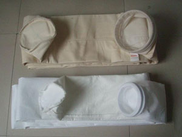

12
2020-11
除尘器布袋价格影响因素有哪些
除尘器布袋是布袋除尘器的主要核心部件，在水泥厂、发电厂、钢铁厂、化工厂、炭黑厂、食品加工厂、沥青混凝土搅拌厂等领域都有着重要的使用，市场对于它的使用量、需求量和购买量都非常大……

除尘器布袋是布袋除尘器的主要核心部件，在水泥厂、发电厂、钢铁厂、化工厂、炭黑厂、食品加工厂、沥青混凝土搅拌厂等领域都有着重要的使用，市场对于它的使用量、需求量和购买量都非常大……
不同材质的除尘器布袋在现在……
布袋除尘器是除尘设备的一种，它美观环保、运行稳定、除尘效率高、经济效益好、能耗少、噪音低，备受人们欢迎，在矿山、水泥、煤电、钢铁、冶金、塑料、陶瓷、铸造……
除尘器布袋是除尘器上的一个重要零部件，在工业上的很多领域中都有着重要的使用，市场对于它的使用量、需求量和购买量都非常大。当购买除尘布袋的时候，定制不……

现在市场中有很多不同类型的除尘器布袋加工厂家，……
隧道窑除尘设备叫法很多构造也不同，我们根据隧道窑的湿度大，温度高，腐蚀高特点，采用不锈钢壳体湿式静电除尘器和脱硫塔相结合制作的砖厂回转隧道窑除尘设备，在线监测和超低排放一把过。

说明：原站新闻中心共有 111 篇文章（23 页），本次改版演示迁移了已采集的列表首页 5 篇（带日期与摘要）及公司动态 1 篇全文；其余文章未在采集范围内，正式交付时可一并迁移。